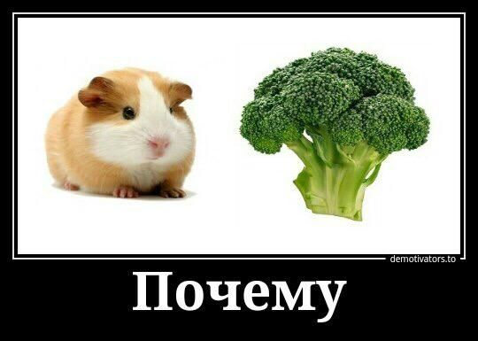

Морские свинки
На предыдущую страницу
Виды:
- Короткошерстные
- Длинношерстные
-
- Лысые
Смешные картинки с морскими свинками:
- мем "почему"

- ряд мемов "... чел"
Формула серотонина (нейромедиатора, который выделяется у людей при взаимодействии с морскими свинками):
C10H12N2O
К началу статьи
Конец страницы
Вверх